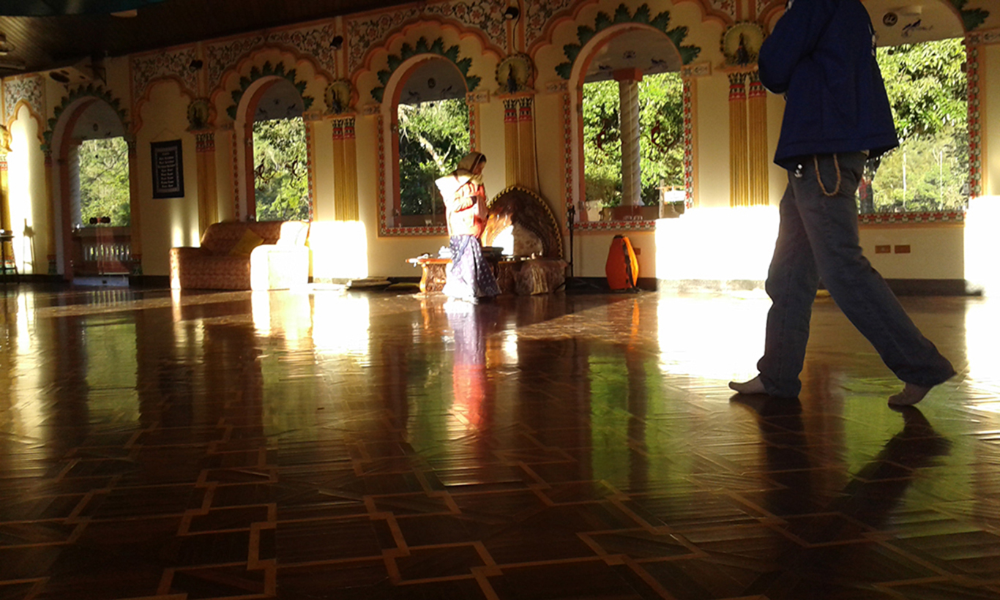
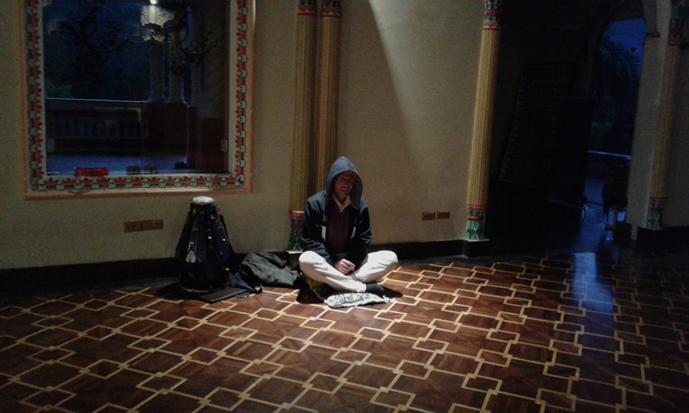
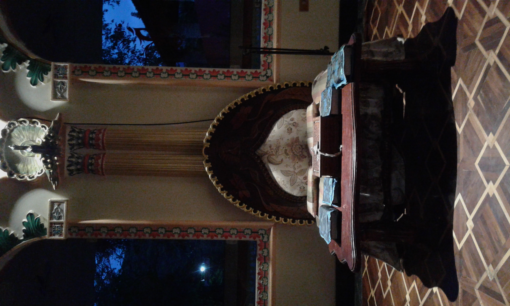
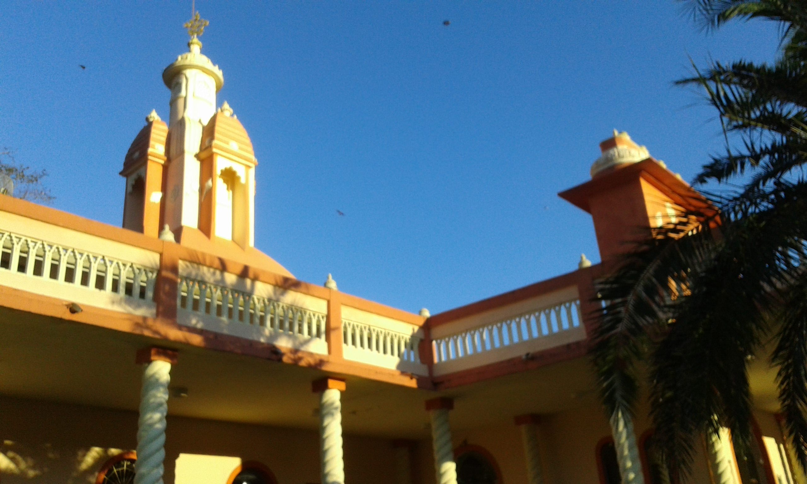
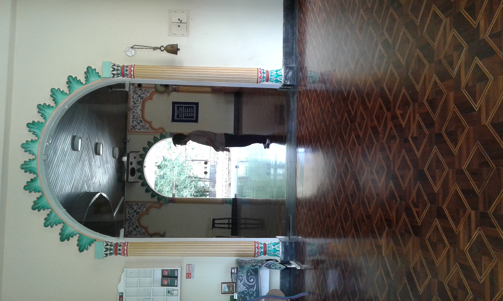

दुनिया का सबसे गर्म



14.नॊव गोकुला
सब चीज़ का एक समय होता है।
मुझे नवा गोकुला में रहने का अवसर मिला।
सही समय पर।
वहाँ अभी भी कुछ मूल हरि कृष्ण भक्त रहते थे।
यह जगह इतनी बड़ी है कि यहाँ कमरे नहीं हैं, बल्कि इस और उस तरह के घर हैं।
मुझे दक्षिण के भक्तों के घर में स्वागत किया गया। जल्दी मुझे ध्यान के लिए जगाया जाता था।
वह घर अब अस्तित्व में नहीं है। भक्तों का देह त्याग हो चुका है। दोनों और कुछ अद्भुत लोग भी चले गए हैं।
सब चीज़ का एक समय होता है।
मुझे नवा गोकुला में रहने का अवसर मिला।
सही समय पर।
वहाँ अभी भी कुछ मूल हरि कृष्ण भक्त रहते थे।
यह जगह इतनी बड़ी है कि यहाँ कमरे नहीं हैं, बल्कि इस और उस तरह के घर हैं।
मुझे दक्षिण के भक्तों के घर में स्वागत किया गया। जल्दी मुझे ध्यान के लिए जगाया जाता था।
वह घर अब अस्तित्व में नहीं है। भक्तों का देह त्याग हो चुका है। दोनों और कुछ अद्भुत लोग भी चले गए हैं।
मैंने प्रभु रूप गौडांग और प्रभु सुंदरांग से दिव्य उपदेश प्राप्त किए।
मैंने प्रभु सुंदरांग से पूछा कि वह मंदिर क्यों नहीं जाते। उन्होंने जवाब दिया, मंदिर हम हैं।
और पूजा हमारे कदम हैं।


इस मंदिर में बैठकर, दीवार की तरफ ध्यान करते हुए महीनों के अभ्यास के बाद, मुझे एक अनुभव हुआ।
मेरे सामने एक छवि प्रकट हुई। यह थे हिन्दू देवताओं के सभी व्यक्तित्व।
सभी एक रहस्यमय संगीत पर नृत्य कर रहे थे, वे मुझसे देख रहे थे और हंस रहे थे।
पहले झटके के बाद, मैंने उन्हें और ध्यान से देखा।
मैंने देखा कि उनके प्रत्येक रूप में पुराणों के विवरण से हल्का सा भिन्नता थी।
हमेशा एक संकेत था जो उन्हें पहचान दिलाता। जल्दी ही मुझे समझ में आ गया: वे सभी एक थे, बस अलग-अलग परिस्थितियों में।
मैंने यह सब अपने ब्लॉग में लिखा था।
उस समय केवल ब्लॉग ही होते थे।
और अगले शनिवार को कुछ भारतीय ब्राह्मण मंदिर का दौरा करने आए थे।
मैं मुख्य कक्ष में पहुँचा, और वह भर गया था। और कोई भी गौरा आरती की पूजा नहीं कर रहा था।
मैंने करतलें उठाई, और एक जापानी को, जो वहाँ था, बजाने के लिए आमंत्रित किया। फिर मैं बैठा और श्रीमद्भागवतम का पाठ करने लगा।
चूँकि जो बुजुर्ग लोग वहाँ लंबे समय से रह रहे थे, वे युवाओं को यह कार्य सौंप देते थे।
इस प्रकार मैंने उस कुर्सी पर बैठकर पाठ किया। यह कोई कर्तव्य नहीं था।
बल्कि इसलिये क्योंकि गुरु का कार्य दूसरों को गुरु बनाना है।
और केवल वही गुरु बना सकता है, जो स्वयं गुरु है।
मूर्ख केवल मूर्खों को ही बना सकता है।
इस प्रकार इन उत्कृष्ट गुरुओं और उनकी श्रोताओं को मान्यता देना, कोई заслूकी नहीं थी।
मैंने इसे एक कर्तव्य के रूप में महसूस किया, और इसके बाद मैं व्याख्यान देने के लिए यात्रा करने लगा, जब तक मुझे एक गंभीर समस्या का एहसास नहीं हुआ।
हर तरफ से अयोग्य लोग इंटरनेट पर शिक्षाएँ सुन रहे थे और पढ़ रहे थे और उन्हें नकल कर रहे थे (और विकृत कर रहे थे)।
तो मेरी जिम्मेदारी थी रुक जाना। क्योंकि अगर नहीं तो मैं मूर्खों को मूर्ख बना रहा होता। बुद्धिमान हमेशा बुद्धिमानों को ही बनाते हैं। 
इस प्रकार इन उत्कृष्ट गुरुओं और उनकी श्रोताओं को मान्यता देना, कोई заслूकी नहीं थी।
मैंने इसे एक कर्तव्य के रूप में महसूस किया, और इसके बाद मैं व्याख्यान देने के लिए यात्रा करने लगा, जब तक मुझे एक गंभीर समस्या का एहसास नहीं हुआ।
हर तरफ से अयोग्य लोग इंटरनेट पर शिक्षाएँ सुन रहे थे और पढ़ रहे थे और उन्हें नकल कर रहे थे।
तो मेरी जिम्मेदारी थी रुक जाना। क्योंकि अगर नहीं तो मैं मूर्खों को मूर्ख बना रहा होता। बुद्धिमान हमेशा बुद्धिमानों को ही बनाते हैं।
कुछ लोग रो रहे थे जब मैं चला गया। मुझे बहुत खेद है कि मैं चला गया।
आज भी मुझे दिल टूटता है कि मैं चला गया....
वे चाहते थे कि कोई और इसे जारी रखे।
वह एक पल था जब ऐसा लगता था कि यह सब जारी रहेगा।

नई परियोजनाओं की सूची से परामर्श लें